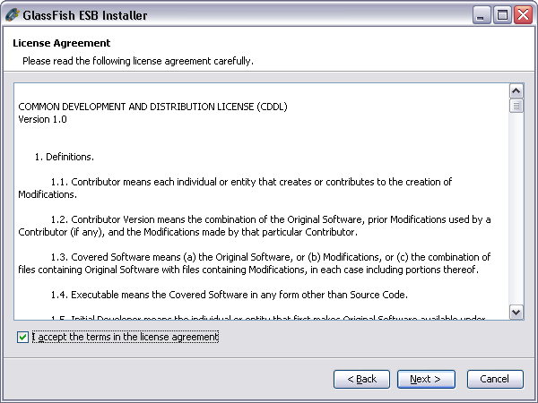
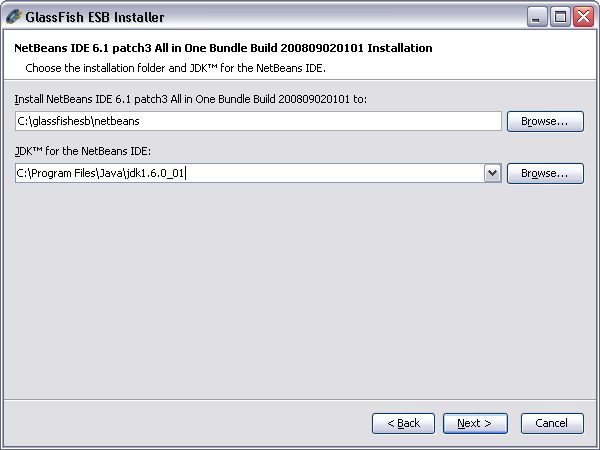
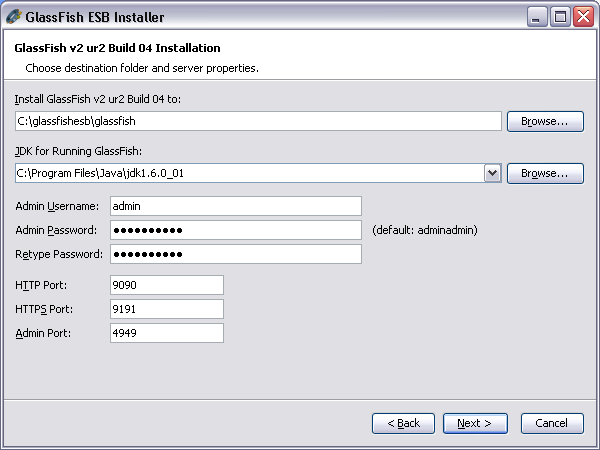
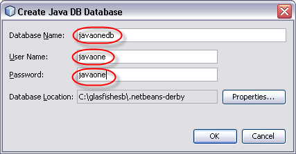
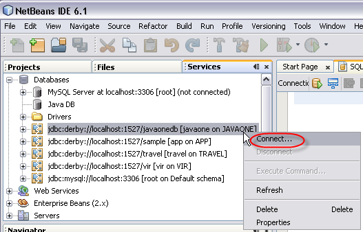
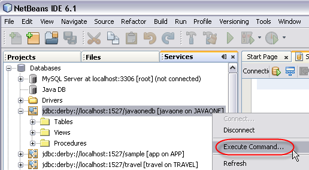
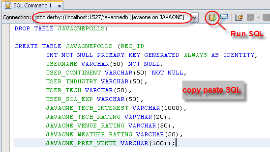
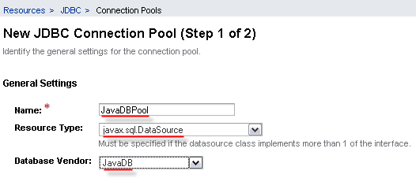
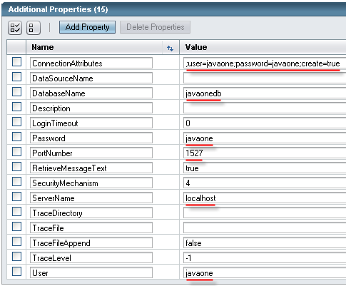
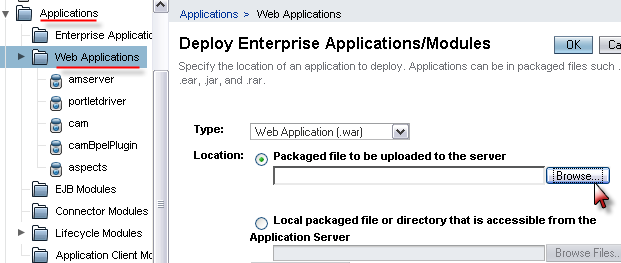

These prerequisite steps run through the installation and setup of the
software required to build the application in your environment. It is
recommended that you
follow all of the steps outlined here in order, although you can jump
directly
to the required section if you've been here before:
Install JDK™ 6 if it is not already available on your machine.
You can get the latest here.
Download the latest version of the GlassFish ESB Installerhere.
Once it has finished downloading, launch the GlassFish ESB
installer and click Next on the first screen...
Click the checkbox to accept the license terms of agreement and
click Next...

Point the installer to your pre-installed JDK 6 and provide the
location in which to install the NetBeans portion of GlassFish ESB.

For the runtime, GlassFish™ v2, provide the
same JDK 6 pre-installed location as before. Use the default options
throughout.
If, however, some ports are already taken (e.g. admin port on 4848 may
be taken if you already have GlassFish separately installed), use ports
9090 (HTTP), 9191 (HTTPS) and 4949 (Admin port) for the remainder of
this tutorial.

Click the Install button to begin the installation
process on your machine.
Once the installation is completed, you are offered a chance to
register your copy of GlassFish ESB. Although registration is optional,
it is quick and easy to do and is
highly recommended in order to gain access to future tutorials,
whitepapers and premium technical content.
Configure GlassFish ESB
Start the NetBeans IDE:
On Windows, click the newly created GlassFish ESB
desktop
icon, or Start > All Programs > GlassFish ESB >
GlassFish ESB
On UNIX systems such as Solaris or Linux, open a terminal
window, navigate to the home directory to which you installed the
NetBeans IDE and type:/bin/netbeans
Upon startup, you may be prompted to import settings from a
previous installation of
NetBeans; select No.
To verify GlassFish was installed correctly and to start it from
the NetBeans IDE:
Select Services tab
Expand the Servers tree and locate the GlassFish
V2 node
Right-click on the GlassFish V2 node and select Start
If you are prompted for a master password, enter your admin
user password. If you did not change this during installation, use the
default password of adminadmin. If the server is
started successfully, the GlassFish V2 node will display the additional
nodes shown in the screenshot below:
Note: If
GlassFish fails to start, examine the Output window of
the GlassFish V2 log file to determine the reason that startup has
failed. The most likely cause is a port clash so ensure that nothing
else is running on the required ports (selected during installation)
and retry the operation.
Configure Java DB Database
Exercise 2 requires the use of a
database that GlassFish ESB
can communicate with via JDBC. This tutorial covers the steps for
setting up Java DB - Sun's supported distribution of the open source
Apache Derby database which is bundled with JDK 6 - although it is
possible to use any database that provides a JDBC driver with metadata
support.
NetBeans provides an easy-to-use interface to create,
start/stop and connect to Java DB databases. The required Java DB JDBC
driver is available by default in NetBeans and GlassFish, so you do not
need to explicity install anything additional for this exercise.
The setup and implementation steps are similar for other
databases. It is important that the database-specific JDBC driver is
installed into NetBeans under Services > Databases >Drivers
and into the .../glassfish/lib directory if you decide
to continue this tutorial with another database.
Java DB can be started either in embedded mode or as a separate
Java Virtual Machine (JVM) process. This tutorial describes the use of
the latter and connects to the Java DB instance using the client-server
driver. The NetBeans plugin for Java DB will be used to start
the Java DB server (in a separate JVM) and also to connect (as a
client) to this instance from NetBeans.
Create a new Java DB database in NetBeans. To do this, right
click on Services > Databases > Java DB and select Create
Database as shown below.
Now enter the values indicated below for the new database and
click 'OK' to submit the form:

Submitting
this form does 3 things:
Creates a new Java DB database called 'javaonedb'
Starts the Java DB service as a separate java process
Automatically creates a client connection to this DB instance
for use as needed
Setup Java DB Table
Right-click on the newly created Java DB connection from NetBeans
and select Connect as shown below

After connecting, right click again on the connection and select 'Execute
Command...'

Copy and paste the following Data Definition Language (DDL)
for creating the required database table into the SQL command window in
the right pane and execute the command by clicking the Run SQL
icon as indicated below:
DROP TABLE JAVAONEPOLLS;
CREATE TABLE JAVAONEPOLLS (REC_ID INT NOT NULL PRIMARY KEY GENERATED ALWAYS AS IDENTITY, USERNAME VARCHAR(50) NOT NULL, USER_CONTINENT VARCHAR(50) NOT NULL, USER_INDUSTRY VARCHAR(50), USER_TECH VARCHAR(50), USER_SOA_EXP VARCHAR(50), JAVAONE_TECH_INTEREST VARCHAR(1000), JAVAONE_TECH_RATING VARCHAR(20), JAVAONE_VENUE_RATING VARCHAR(50), JAVAONE_WEATHER_RATING VARCHAR(50), JAVAONE_PREF_VENUE VARCHAR(100));
Click on the Run SQL icon to execute the above statements.
Any error from the command (specifically DROP
statement) can be safely ignored
since this table would
not have been
created yet unless you are repeating parts of this tutorial.

Configure GlassFish runtime for Java
DB
GlassFish already has the Java DB client driver required to
communicate to a Java DB instance pre-installed in its classpath, so it
is only necessary to configure the connection pool and JDBC resource.
These can be set up using the GlassFish admin console.
From the Services tab in the NetBeans IDE, right click on the
running GlassFish V2 node and select View Admin Console.
Note: It
is necessary to start the GlassFish V2 instance first in order to see
this option.
This will open a browser login screen to the admin console
(running on the default port of 4848). Login with the following
credentials:
user = admin
password = adminadmin
On the left pane, browse to Resources > JDBC >
Connection Pools
Create a new JDBC Connection Pool by selecting the 'New..' button
and specify the values as shown in Step 1 of 2, below:

Click Next to go to Step 2 of 2.
Default values
will be used for all settings other than the connection properties.
Scroll down to
the Additional Properties section at the bottom of the page and
specify the Java DB connection parameters as shown below. These values
will be used to open a new connection to Java DB as required by the
GlassFish application server.
Name
Value
ConnectionAttributes
;user=javaone;password=javaone;create=true
DatabaseName
javaonedb
Password
javaone
User
javaone
Note:
User
and Password are
intentionally entered twice as both individual property and connection
attribute.
Click Finish after entering the
last property (i.e. User
= javaone).

Ensure that the connection properties were setup properly. To do
so, open the connection pool by clicking on JavaDBPool under Resources
> JDBC > Connection Pools and click the Ping button
to test the connection to the database as shown below:
If the connection was successful, you will see the 'Ping
Succeeded' message above.
Note: If ping failed, make sure the Java DB server
was started from Netbeans (Service
> Databases > Java DB, right
click and 'Start Server'). Also verify that the connection
properties above (host, port, user, password) are correct. For
instance, if the error is "connection failure authentication occurred",
chances are you forgot to specify the user and password in the
ConnectionAttributes property
(";user=javaone;password=javaone;create=true")
Create a JDBC Resource using the connection pool created in the
last step (on the left pane, expand 'Resources > JDBC > JDBC
Resources').
Specify a JNDI Name e.g. jdbc/javadb, and select the Pool
Name JavaDBPool as created in the previous step from the list.
Make a note of the jndi name of this resource as it will be referenced
in the design time.
Install pre-built application
Follow these steps to deploy the pre-built Poll Submit web
application to the GlassFish application server:
Firstly, download the WAR file for the pre-built application to
be deployed from here
and save it to a local folder.
Once it is downloaded, the WAR file can be deployed from the
GlassFish admin console. Launch the GlassFish admin console, for
example from NetBeans as shown below:
Open the Applications > Web
Applications on the left pane and click the Deploy...
button

Click the Browse... button and use the dialog box to
locate the
location of the saved WAR file, then click the OK button to
deploy the web application.
Note: Some
browsers may display a dialog box
warning that the "Selected file does not match Application type.
Continue deployment?". Click OK to continue deployment if
this is encountered. If you get an error "Illegal class modifiers"
during deploy, you will have to build the WAR from source using the project
zip file as seen in step 7 below.
In the next dialog, launch the deployed web application as shown
below:
Verify that the JavaOne poll page is displayed correctly.
Interested in learning more about how the web application was
built?
The document JavaOnePollInterface.pdf
describes how the web interface apps were built in NetBeans using
Project Woodstock and Java Server Faces
The complete NetBeans project with this implementation is
also
available for your reference. Just download and extract the project
zip file, and open the project JavaOnePollInterface within
NetBeans.